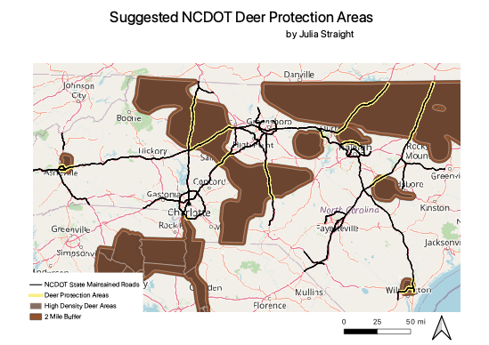

Homework 8
Julia Straight
QUESTION: Where are people most likely to have deer-related car crashes?
This map depicts suggestion areas for NCDOT deer protection. The black lines represent North Carolina Department of Transportation State Maintained Highways. The darker brown areas represent high deer population density. The average deer has a roaming range of about two miles, so I created a two mile buffer around these high deer density areas. I then created an intersection, shown in yellow, between the high deer density areas and the NCDOT maintained roads. This intersection highlights which parts of NCDOT roads are more likely to have deer run out into the roads, potentially harming both drivers and deer. There are a few roads the skirt around the outsides of the high deer density areas, so the buffer was important to show how these roads also have high risk of deer running into a car. Deer are not stationary, so they cannot be expected to stay within a range drawn by a human. This map can inform NCDOT on where to place deer crossing signs and where to inform people to be extra alert for deer.

Data used for this project
Deer Density Data
NCDOT State Maintained Roads Data